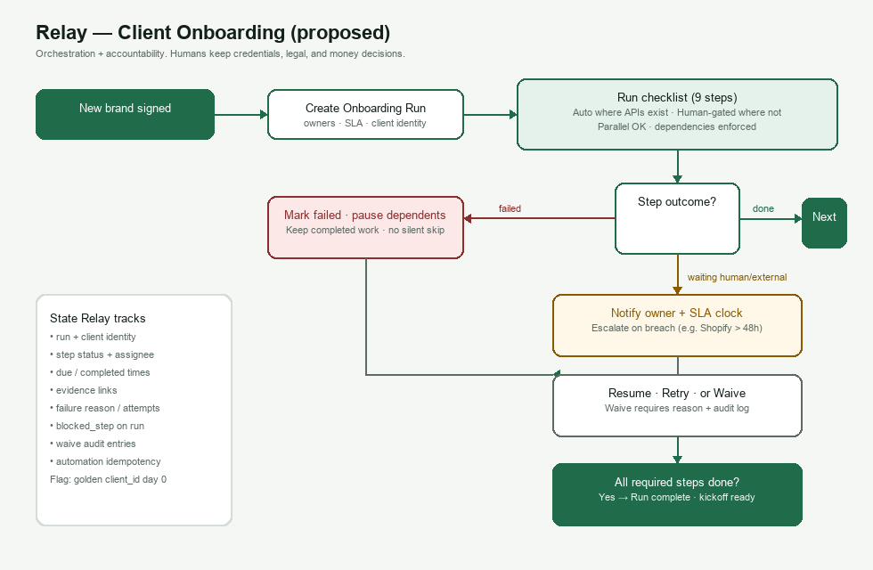

Palm Outsourcing trial · Question 1
What Relay should do about client onboarding
Harbourline’s nine-step onboarding currently takes ~half a day per brand, varies by person, and sometimes drops steps (one brand went two weeks without Shopify access). With six new brands next month, Relay should own orchestration, state, reminders, and safe automation — not replace humans for credentials, legal, or money.
1. What sits in Relay vs with a human
| Step | Relay | Human |
|---|---|---|
| Shopify / analytics access | Task, invite link/status, SLA, escalate if stale | Grant/accept access in the vendor UI |
| Folder / board / kickoff doc | Create from approved templates when APIs exist | Customize strategy content and owners |
| Billing / contract filing | Checklist, due dates, evidence links | Enter terms, sign, file judgment calls |
| Kickoff call | Scheduling link + booked/not tracked | Resolve calendar conflicts |
| Welcome email | Draft from template; send when prerequisites met | Approve edge-case tone / first send |
Rule: Relay never silently skips a required step. Irreversible client-facing actions stay human-gated unless Nadia explicitly trusts an automation.
2. State Relay tracks
Per Client and OnboardingRun: owners,
start/target dates, run status (active | blocked | complete | cancelled).
Per step:
pending | in_progress | waiting_external | waiting_human | done | failed | waived,
assignee, due/completed times, evidence URL, failure reason, attempt count.
Plus automation idempotency keys (folder id, board id, email id) so retries do not duplicate work.
3. When a step fails mid-run
- Mark the step
failedand pause only dependent steps. - Keep completed work (no destructive rollback of folders/boards already created).
- Notify the step owner; escalate on SLA breach (same class of miss as the two-week Shopify gap).
- Resume via retry, or waive with a required reason in the audit log.
- Never auto-skip a required step.
4. Understand before implementation
Systems of record and API readiness for each of the nine steps; who owns each step; required vs optional steps and hard dependencies (e.g. welcome email only after contract + billing); the client identity fields that will also feed renewals later.
5. Assumptions that break the architecture if wrong
- One linear checklist per brand (fails for multi-store / phased SOWs).
- Drive/board/email APIs exist (otherwise Relay is checklist + reminders only).
- A single ops owner model (fails if pods need a work queue).
- Client name is a stable join key (fails without a golden
client_id). - The process is strictly sequential (many steps can run in parallel).
6. First three questions for Nadia
- Which of the nine steps already have a system API or template Relay may write into? → Sets automation vs checklist-only scope.
- What is the hard stop before kickoff / welcome email? → Sets the dependency graph and “complete.”
- Who is paged when Shopify access is still open after 48 hours? → Sets ownership and escalation.
7. Flow diagram

8. Issue to flag (not asked)
Golden client identity on day zero. Capture Shopify domain + canonical/trading names when the run is created. Without this, onboarding, billing, projects, and renewals cannot join reliably — the same root cause behind missed access and lapsed retainers.
Submission note: this page is the shareable brief with embedded diagram.
A Google Doc mirror will be published once Google OAuth is reconnected in Cursor
(current MCP/gcloud tokens return invalid_grant).